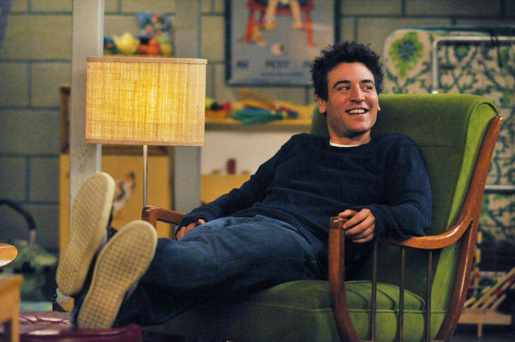

Головний герой серіалу «Як я зустрів вашу маму», 30-річний Тед Мосбі, завжди носив з собою «список Муртау». В нього він періодично вносив різноманітні речі, для яких він вважав себе застарим. Сам список названний на честь детектива Муртау з фільму «Смертельна зброя», який при будь-якій нагоді казав свою «коронну» фразу «I'm too old for this sh*t».
Я як справжній фанат цього серіалу та людина, яка також знаходиться по ту сторону, вирішив доповнити список Теда, додавши в нього власні пункти, які на мою суб'єктивну думку, будуть актуальні для людей, яким виповнилось трохи за 30:)
Отже, я занадто старий, щоб...
- Переносити візит до лікаря.
- Пояснювати причину, відмовляючи людям.
- Дивитись топових блогерів на YouTube.
- Купляти алкогольні напої по акціям.
- Зупинятись у хостелі в кімнаті на 12 чоловік. Хоча... напевно просто зупинятись у хостелі))
- З'їсти цілу піццу без перерви на "какао".
- Заночувати на матраці у квартирі друга.
- Жити у готелі, про який Google нічого не знає.
- Вішати постери на стіну без рамок.
- Ходити на концерти реперів нового покоління.
- Намішати алкогольні напої різної важкості під час вечірки.
- Обирати незвичні позиції меню. Адже є лише одна позиція — та, яка позитивно впливає на твій метаболізм.
- Гостювати в домі батьків більше одного тижня. Я би сказав більше одного дня))
- Подорожувати автостопом.
- Дозволити собі негативний баланс на карті.
- Користуватись сouch surfing.
- Засмагати без сонцезахисного крема.
- Ходити на рейви.
- Мріяти про авантюрні пригоди під час поїздки в умовний Тайланд.
- Ігнорувати такі продукти, як селера, броколі, зернистий сир, гіркий шоколад, кава без молока та сир з пліснявою.
- Перекинути пару стопок з незнайомцями.
- Фотографуватись з маскою тварини в інстаграмі.
- Захоплюватись ровесниками, які до сих пір живуть так, ніби вони все ще студенти.
- Закидати приміщення туалетним папером.
- Ігнорувати додатки для підрахунку доходів.
- Їздити на фестивалі з палаткою. Та й взагалі робити будь-що пов'язане з палаткою))
- Пити пиво через воронку.
- Ходити на нічні кіносеанси.
- Промовчати, якщо щось не так.